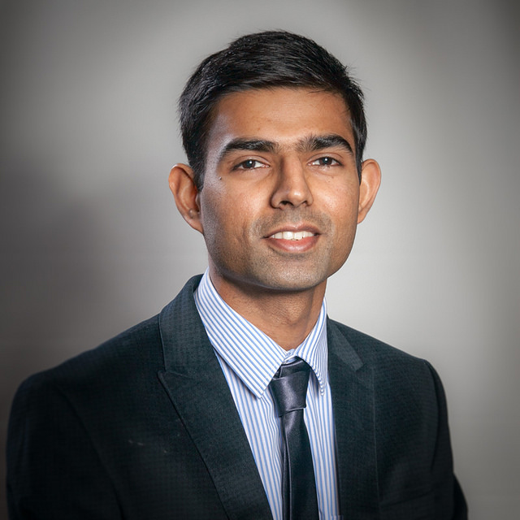

Operations Researcher | Data Sceintist
PhD Candidate, Industrial Engineering (Operations Research) - graduating in Feb 2019
University at Buffalo, The State University of New York

September 16, 2018: Developed and released a matching algorithm for NITCAMP, a mentoring program with my alma mater National Institute of Technology Calicut, India. More details about the project can be found here.
Sharing the happy news that UB INFORMS student chapter (that I had the opportunity to serve as the President during 2017-18 academic year) will be awarded Summa Cum Laude (the highest recognition for an INFORMS student chapter!) for the calendar year 2017 activities. Looking forward to INFORMS 2018 Annual Conference where the award will be presented!
September 9, 2018: I am launching this personal website! Previously I had started a similar attempt using the webspace provided by my university, however, recently I came across the GitHub Pages option, which seems to be wonderful and user friendly! I am looking to actively updating this page, frequently.